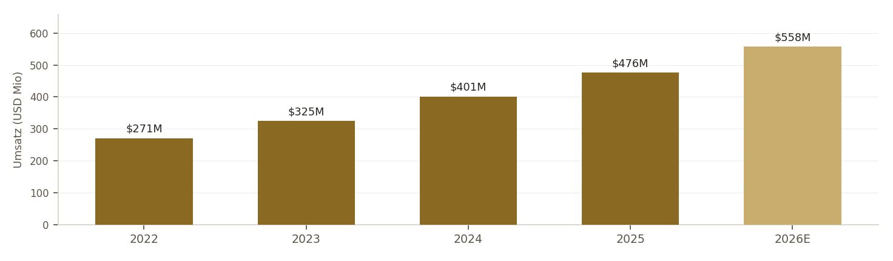
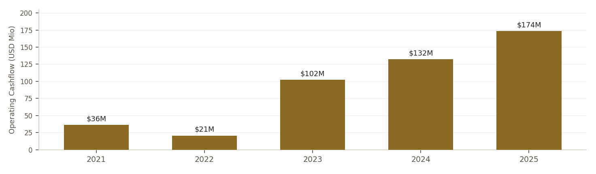
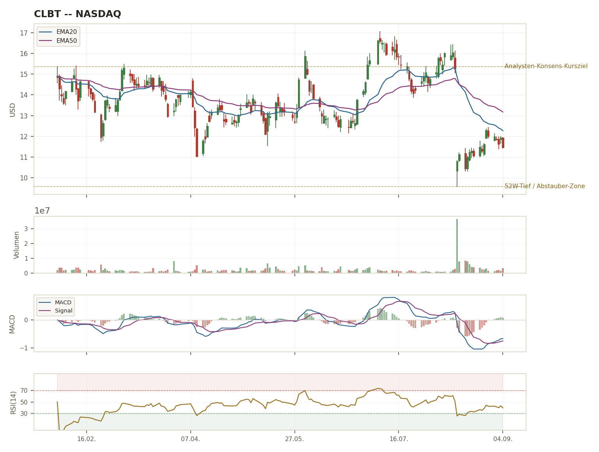
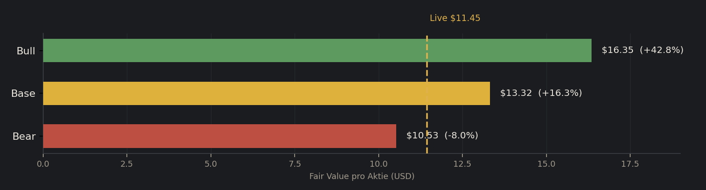

Ursprung. Cellebrite wurde 1999 von Yossi Carmil, Ron Serber und Avi Yablonka gegründet — ursprünglich, um ein ganz anderes Problem zu lösen: die Fragmentierung der frühen Mobilfunk-Gerätelandschaft. Ihr erstes Werkzeug, der "Universal Memory Exchanger", übertrug schlicht Kontakte und Daten zwischen unterschiedlichen Handy-Modellen für Mobilfunkhändler. Erst Mitte der 2000er-Jahre erkannten die Gründer, dass genau diese Extraktionsfähigkeit für die Strafverfolgung einen völlig eigenen, hochwertigen Anwendungsfall hatte, und bauten daraus eine eigene forensische Sparte auf — der eigentliche Ursprung des heutigen Geschäftsmodells war damit eher ein Zufallsfund als eine geplante Strategie.
Der Wendepunkt. 2007 übernahm die japanische Sun Corporation das Unternehmen und finanzierte die internationale Expansion. Im selben Jahr brachte Cellebrite mit dem UFED (Universal Forensic Extraction Device) sein bis heute prägendes Kernprodukt auf den Markt — zeitgleich mit der Markteinführung des ersten iPhones und dem Beginn des Smartphone-Zeitalters. Diese zeitliche Koinzidenz erwies sich als Glücksfall: Während Smartphones binnen weniger Jahre zum zentralen Beweismittel praktisch jeder Straftat wurden, etablierte sich Cellebrite parallel dazu als das Werkzeug, mit dem Ermittler weltweit gerichtsverwertbare Daten aus genau diesen Geräten extrahieren.
Warum der Burggraben real ist — und warum es kein Patentschutz ist. Mobile Datenextraktion ist technisch prinzipiell nachbaubar; Cellebrites eigentlicher Burggraben beruht auf etwas viel schwerer zu Kopierendem: Gerichtsverwertbarkeit. Über zwei Jahrzehnte hinweg hat sich Cellebrites Chain-of-Custody-Dokumentation, das Zertifizierungsprogramm für Ermittler und die Präzedenzfall-Historie vor Gericht als De-facto-Standard etabliert, den Staatsanwaltschaften und Verteidiger gleichermaßen kennen und akzeptieren. Ein Wechsel zu einem alternativen Anbieter bedeutet für eine Behörde nicht nur neue Software, sondern neu zu schulende Ermittler, neu zu etablierende Beweisführungs-Standards und das reale Risiko, dass Beweismittel vor Gericht angefochten werden, weil das verwendete Tool keine etablierte Historie hat. Mit über 7.000 Kunden — mehrheitlich öffentliche Sicherheitsbehörden — in mehr als 150 Ländern ist dieser eingespielte Status quo einer der am schwersten zu durchbrechenden Burggräben überhaupt: er verteidigt sich nicht primär durch Technologie, sondern durch institutionelles Vertrauen und behördliche Trägheit — ein struktureller Vorteil, der eher wächst als schrumpft, je länger er besteht.
Die aktuelle Erweiterung. Mit der 2025 abgeschlossenen 170-Millionen-Dollar-Übernahme von Corellium (ARM-basierte Gerätevirtualisierung, Gründer Chris Wade wurde direkt CTO) erweitert Cellebrite seinen Kern über die reine Hardware-Extraktion hinaus in Richtung Cloud-nativer, softwarebasierter Geräte-Analyse — ein struktureller Versuch, den Burggraben von der physischen Extraktion auf die gesamte digitale Ermittlungs-Plattform auszudehnen, bevor Wettbewerber diesen Schritt vorwegnehmen können.
Über 25 Jahre Produkt-/Technologie-Führungserfahrung, zuletzt President von Auth0 bei Okta (Identitätsplattform), davor Führungspositionen bei DigitalOcean und LiveIntent sowie beim Aufbau von Amazons Werbegeschäft und bei Nielsen. Seit Mai 2026 bereits President Products & Technology bei Cellebrite, bevor er zum CEO aufstieg. Signalisiert Strategiewechsel: weg vom vertriebsgetriebenen Fokus des Vorgängers Thomas Hogan, hin zu produktgetriebenem Wachstum.
Über 30 Jahre Erfahrung als Finanzchef börsennotierter Software-Unternehmen, zuvor CFO bei C3.ai und Model N sowie Finanzpositionen bei Guidewire Software, Microsoft und General Electric. Sein Track Record beim Skalieren globaler Softwarefirmen deckt sich mit der aktuellen Unternehmensphase — die parallel zur Umsatz-/ARR-Guidance-Kürzung erfolgte Anhebung der Adj.-EBITDA-Guidance deutet auf genau die Kostendisziplin hin, die sein Profil erwarten lässt.
Gründer von Corellium, einem auf ARM-basierte virtuelle Geräte-Emulation spezialisierten Unternehmen, das Cellebrite 2025 für $170 Mio. übernahm — Wade wurde im Zuge dessen direkt zum CTO ernannt. Bringt tiefe technische Expertise in softwarebasierter Gerätevirtualisierung mit, einen strategisch wichtigen Baustein für die Cloud-native Weiterentwicklung der Plattform weg von reiner Hardware-Extraktion.
Ankeraktionär. Die japanische Sun Corporation, die Cellebrite bereits 2007 übernahm und später an die Börse brachte, hält laut jüngsten Angaben weiterhin rund 42,5% der Anteile (Stand 23.02.2026) — ein struktureller Ankeraktionär, der einerseits Stabilität und langfristige Ausrichtung signalisiert, andererseits auch bedeutet, dass Minderheitsaktionäre bei strategischen Grundsatzentscheidungen effektiv nur eine begrenzte Stimme haben. Anders als bei Digital Arts (Gründer-geführt mit ~22% Kontrolle) ist der Ankeraktionär hier kein operativ tätiger Gründer mehr, sondern ein externer Konzern-Investor.
Cellebrite ist seit dem Börsengang per SPAC-Fusion im August 2021 durchgehend ohne Dividende und ohne aktives Aktienrückkaufprogramm geblieben — anders als etablierte Compounder mit mehrjähriger Ausschüttungs-Historie gibt es hier schlicht keinen Track Record zu bewerten, weder positiv noch negativ, sondern eine bewusste Wachstumsphase ohne Kapitalrückfluss. Bei gleichzeitig hoher aktienbasierter Vergütung (rund 11-13% des Umsatzes, siehe SBC-Infection-Check Seite 6) bedeutet das in der Nettobetrachtung eine fortlaufende Verwässerung der bestehenden Aktionäre, ohne den Ausgleich durch Dividenden oder Rückkäufe, den ein reiferes Software-Unternehmen typischerweise bieten würde. Das ist kein Fehlverhalten, sondern die erwartbare Kapitalallokations-Logik einer noch skalierenden Wachstumsfirma — sollte aber bei jeder Neubewertung explizit mitgedacht werden, nicht stillschweigend vorausgesetzt.
| Dimension | Befund | Einordnung |
|---|---|---|
| Guidance-Treffsicherheit | 3 Jahre in Folge Beat (2023-2025), dann erste Kürzung 2026 (siehe Seite 4) | 🟡 Bisher stark, aktueller Bruch noch nicht final beurteilbar |
| Aktionärsrückgabe-Konsistenz | Kein Dividenden-/Buyback-Track-Record seit Börsengang 2021 | ⚪ Kein Urteil möglich (junge Historie, Wachstumsphase) |
| Transparenz | ARR/Bookings/Backlog werden offengelegt, Non-GAAP-Überleitung vorhanden | 🟢 Solide, vergleichbar mit Branchenstandard |
| Selbstreflexion | CEO benannte Ursache des Q2-Fehltritts direkt und konkret (siehe Zitat Seite 7) | 🟢 Transparent, aber Nachhaltigkeit erst über weitere Quartale zu bestätigen |
Vier unterschiedliche Ergebnisse auf vier Achsen statt einer verschmolzenen "Management ist gut/schlecht"-Note — Cellebrite ist bei Transparenz und (bisheriger) Prognosetreue stark, hat aber schlicht keine Historie bei Kapitalrückführung, weil das Unternehmen dafür noch zu jung an der Börse ist.
BEOBACHTEN
Score-Konsens ~5/10 · Tier 3 · Abstauber $9,00-10,25
BEOBACHTEN
Score 4/10 · Konfidenz 🟡 · Abstauber $9,00-9,50
HALTEN / BEOBACHTEN
Score 5,5/10 · Konfidenz 🔴/🟡 · Abstauber $9,50-10,25
| K-Kriterium | Jack (Gemini) | Conan (ChatGPT) | Jarvis-Einordnung |
|---|---|---|---|
| ROIC >20% | 12,0% ❌ [VERIFIED] | vermutl. >20%, Cash-verzerrt [TRAINING] | Uneinigkeit selbst benannt — Cash-Overhang verzerrt beide Methoden, echte K-Lücke |
| FCF-Marge real (SBC-ber.) | 28% ✅ (Headline) | ≈17% ❌ (SBC-bereinigt) | Conans strengere SBC-Bereinigung ist methodisch korrekter → K-Fail |
| Op. Leverage | Ja ✅ | Ja ✅ (Umsatz +17,5% < Adj.EBITDA +21%) | Einig — bestätigt |
| EPS-CAGR 5J ≥12% | 20% ✅ [VERIFIED] | plausibel >12%, nicht primär verifiziert [TRAINING] | Beide TRAINING-lastig, Richtung übereinstimmend |
| NRR (K, SaaS-Override) | 112% 🟡 halber Punkt | 117% (20-F/Earnings-Release, primärquellennah) | Divergenz 5pp — Conans Zahl hat bessere Quellenlage, beide unter 120%-Vollpunkt |
K-Score Jack: 4/5 (ROIC-Fail) · K-Score Conan: 3,5/5 (ROIC+FCF-Fail, NRR halber Punkt) — beide im Grenzfall-Band (K-BASIS−1/−2), kein Terminal-Abbruch, aber übereinstimmend kein sauberer 5/5-Compounder. Divergenz selbst ist der Mehrwert des 3-fach-Checks: Jack übernahm die Headline-FCF-Marge, Conan grub bis zur SBC-bereinigten Realzahl — genau diese Differenz ist auf Seite 9 als "Der unterschätzte Punkt" ausgeführt.
Cellebrite wird nach TMR-Methodik im SaaS-Override-Modus geprüft, weil das Geschäftsmodell klar ARR-/Subscription-basiert ist (2025: License-Subscription-Umsatz rund 90% des Gesamtumsatzes). Das ersetzt den sonst üblichen Piotroski-F-Score als K-Kriterium durch die Net Revenue Retention (NRR) — ein für wiederkehrende Software-Umsätze aussagekräftigeres Maß dafür, ob Bestandskunden im Zeitverlauf mehr oder weniger ausgeben. Die K-BASIS bleibt bei 5, die Abbruch-Schwelle bei K≤3/5 — Cellebrite bewegt sich mit 3,5-4/5 knapp darüber, im methodisch vorgesehenen Grenzfall-Band, das eine Begründungspflicht statt eines automatischen Abbruchs auslöst.
| Geschäftsjahr | Umsatz | YoY-Wachstum | Kommentar |
|---|---|---|---|
| 2022 | $270,65 Mio | — | Basisjahr dieser Historie |
| 2023 | $325,11 Mio | +20,1% | |
| 2024 | $401,20 Mio | +23,4% | Wachstums-Höhepunkt dieser Historie |
| 2025 | $475,68 Mio | +18,6% | Erste sichtbare Verlangsamung |
| 2026E | $555-561 Mio (Guidance) | ≈+17% | Nach Kürzung vom 13.08.2026 |
2024 wies Cellebrite einen GAAP-Nettoverlust von -$283,0 Mio aus — bei oberflächlicher Betrachtung ein Alarmsignal. Tatsächlich war das operative Geschäft in diesem Jahr solide profitabel: das Non-GAAP-Nettoergebnis lag bei +$97,8 Mio. Die Differenz stammt fast vollständig aus einem einmaligen, nicht-operativen Bilanzierungseffekt: der Neubewertung von Restricted-Sponsor-Shares-, Price-Adjustment-Shares- und Optionsschein-Verbindlichkeiten im Zuge der vollständigen Optionsschein-Rücknahme (Nachwirkung der SPAC-Fusion von 2021). Ein Leser, der nur die GAAP-Schlagzeile sieht, würde 2024 fälschlich als Krisenjahr einordnen — genau die Art von Reporting-Verzerrung, die eine saubere Deep-Dive-Analyse aufdecken muss, statt sie unkommentiert stehen zu lassen.
| FY | Umsatz-Guidance | Ist-Umsatz | Ergebnis |
|---|---|---|---|
| 2023 | $305-315 Mio | $325,1 Mio | ✅ BEAT (+4,8% über Mittelwert) |
| 2024 | im Jahresverlauf mehrfach angehoben | $401,2 Mio | ✅ BEAT (Original-Ziele übertroffen) |
| 2025 | $465-475 Mio | $475,68 Mio | ✅ BEAT (am oberen Rand der Spanne) |
| 2026 | $565-571 Mio → gesenkt auf $555-561 Mio (13.08.) | laufend, Q3 noch offen | ⚠ ERSTE KÜRZUNG in diesem Fenster |
Zusatzbefund (Quartalsebene, alle Updates zusammengenommen): Zwischen August 2022 und Mai 2026 gab es 26 Guidance-Updates, davon 8 Anhebungen und 11 Senkungen — häufige unterjährige Nachjustierung ist bei Cellebrite eher Normalität als Ausnahme. Auf Jahresebene betrachtet ergibt sich aber ein klareres Muster: drei aufeinanderfolgende Jahres-Beats (2023-2025), dann der erste echte Bruch 2026 — zeitlich exakt zusammenfallend mit dem CEO-Wechsel. Das spricht eher für einen Einzelfall/Reset als für einen langjährig verschlechternden Trend wie im Digital-Arts-Vorbild — muss sich aber erst mit den Q3-2026-Zahlen bestätigen.

Hellerer Balken (2026E) = Guidance-Schätzung, kein Ist-Wert. Wachstums-Dezeleration seit 2024 optisch klar sichtbar, siehe Tabelle Seite 4 für Details.

Operating Cashflow (vor Capex) hat sich von $36,05 Mio (2021) auf $173,54 Mio (2025) nahezu verfünffacht — ein deutlich steilerer Anstieg als beim Umsatzwachstum im selben Zeitraum (+90%), was für eine sich verbessernde operative Cash-Konvertierung spricht. Bemerkenswert: 2022 fiel der OCF auf nur $20,58 Mio (unter dem 2021er-Niveau), obwohel der Umsatz in diesem Jahr wuchs — ein Hinweis auf Working-Capital-Effekte oder Sondereffekte in diesem einen Jahr, die hier nicht weiter aufgeklärt werden konnten. Capex blieb über die gesamte Periode niedrig (zwischen $5,1 Mio und $13,2 Mio p.a.), weshalb FCF und OCF eng beieinander liegen.
Cellebrite zahlt keine Dividende und hat seit dem Börsengang 2021 auch keine angekündigt — konsistent mit der bereits auf Seite 2 dargestellten Wachstumsphase ohne Kapitalrückfluss. Dividendenrendite: 0,00%. Dieser Punkt wird hier bewusst explizit als "geprüft und nicht zutreffend" vermerkt statt stillschweigend wegzulassen (siehe Agent-Playbook.md-Lektion aus dem A10-Networks-Fall, wo ein tatsächlich vorhandenes Dividenden-Zahlungsprogramm zunächst übersehen wurde).
| Produkt | Zweck | Namentlich genannte Wettbewerber |
|---|---|---|
| Inseyets (UFED + Physical Analyzer + Cloud + Commander) | Mobile Forensik-Extraktion im Feld und Labor — das historische Kernprodukt | Magnet Forensics/Grayshift (GrayKey), MSAB (XRY), Oxygen Forensics |
| Pathfinder | KI-gestützte Investigations-Analytics-Plattform, fallübergreifende Muster-Erkennung | Magnet AXIOM, Nuix |
| Guardian | Cloud-Beweismittelmanagement, Chain-of-Custody von Beschlagnahme bis Anklage | OpenText EnCase/Forensic, Axon Evidence |
| Corellium (seit 2025) | ARM-basierte virtuelle Geräte-Emulation für Sicherheitsforschung/Testing | Kein direkter Forensik-Wettbewerber, eigenständige Nische |
Bemerkenswert: Die beiden größten unmittelbaren Konkurrenten im Kerngeschäft — Magnet Forensics und Grayshift — sind seit der Übernahme durch Thoma Bravo (2023) und anschließender Fusion (2024) nicht mehr börsennotiert. Das ist selbst ein Datenpunkt: Private-Equity-Kapital stuft den Digital-Forensics-Sektor als konsolidierungsreif und attraktiv genug für einen Leveraged-Buyout ein, was strukturell für die Branchenattraktivität spricht, gleichzeitig aber die Zahl direkt vergleichbarer börsennotierter Peers für die eigene Bewertungseinordnung reduziert.
| Unternehmen | Land | Fokus | Forward P/E | Marktkap. |
|---|---|---|---|---|
| Cellebrite (CLBT) | Israel/USA | Mobile Forensik, Marktführer | 18,7x | $2,87 Mrd |
| MSAB / Micro Systemation (STO:MSAB.B) | Schweden | Mobile Forensik (XRY), Nischenanbieter | 25,7x | ≈SEK 1,65 Mrd (≈$155-165 Mio) |
| Magnet Forensics / Grayshift | Kanada/USA | End-to-End DFIR | n/a — privat seit 2023/2024 (Thoma Bravo) | n/a |
| Oxygen Forensics | USA | Mobile Forensik | n/a — privat | n/a |
Die Preissetzungsmacht fällt moderat bis stark aus: Die Bruttomarge bewegt sich je nach Quartal zwischen 82 und 86%, was grundsätzlich für eine starke Preisdurchsetzung im spezialisierten Digital-Forensics-Markt spricht. Der jüngste Guidance-Cut relativiert dieses Bild allerdings etwas, da er unter anderem mit verzögerten Großaufträgen und längeren Verhandlungszyklen bei Behördenkunden begründet wurde — ein Hinweis darauf, dass die Preisdurchsetzung bei Großkunden nicht ganz friktionslos verläuft. Bei den Wechselkosten sind sich Jack und Conan unabhängig voneinander einig, dass hier ein wirklich starker Burggraben besteht: Behörden sind über Schulungen, Zertifizierungen und die gerichtsfeste Chain-of-Custody-Dokumentation tief in Cellebrites Workflows eingebunden, was einen Anbieterwechsel operativ und rechtlich riskant macht (siehe Seite 1 für die ausführliche Herleitung, Seite 5 für die Produktlinien-/Wettbewerber-Aufschlüsselung). Der Marktanteil gilt als führend, lässt sich mangels belastbarer externer Zahlen aber nicht exakt quantifizieren, weshalb der Gesamtmoat als solide, aber nicht als Ausnahme-Fall eingestuft wird.
Jack konnte den 20-F-Geschäftsbericht in seiner Sitzung nicht im Volltext einsehen und stufte den Punkt deshalb vorsichtig als "nicht geprüft" ein, wobei die ihm verfügbaren Sekundärquellen keinerlei Hinweise auf eine Bestandsgefährdung zeigten. Conan hatte dagegen über seine eigene Live-Recherche direkten Zugriff auf die SEC-Primärquelle und konnte darin ein uneingeschränktes Prüfungsurteil von EY feststellen, das ausdrücklich keinen Going-Concern-Vermerk enthält. Da eine Primärquelle grundsätzlich eine Sekundärquelleneinschätzung übertrumpft, übernimmt Jarvis für die finale Bewertung Conans belastbareren, primärquellenbestätigten Befund. Insgesamt gibt es damit keinerlei Anzeichen für eine Bestandsgefährdung — ein Ergebnis, das angesichts der sehr soliden Netto-Cash-Position des Unternehmens auch plausibel ist.
URTEIL: ✅ Unauffällig, primärquellenbestätigt.
Beide KIs sind hier völlig unabhängig voneinander, über unterschiedliche Rechenwege, zum selben Ergebnis gekommen: 🔴 FLAG AKTIV — ein methodisch bestätigter, robuster Befund statt eines Einzelfunds. Jack berechnete eine Verwässerung von 2,16% im vergangenen Jahr, während Conan über stockanalysis.com sogar eine Zunahme der ausstehenden Aktienzahl von 9,33% gegenüber dem Vorjahr fand und die aktienbasierte Vergütung auf etwa $57-67 Mio bzw. 11-13% des Umsatzes bezifferte. Da beide Werte deutlich über der methodisch festgelegten 2%-Schwelle für die jährliche Verwässerung liegen, greift die Regel unabhängig davon, welcher der beiden Werte exakt zutrifft. Die Konsequenz ist in der Methodik klar vorgegeben und wurde bei beiden KIs identisch angewendet: Konfidenz-Deckel max. 🟡, Score-Malus -2, Sizing-Deckel max. Tier 3.
Bei der Kundenkonzentration gibt es keinerlei Anlass zur Sorge 🟢 kein Flag: Die 25 größten Kunden zusammen stehen für rund 25% des Umsatzes, und kein einzelner Kunde überschreitet die kritische 5%-Marke. Eine namentliche Vertriebspartner-/Distributor-Konzentration wie bei Digital Arts (dort konkret benannte Partner mit Umsatzanteil) konnte für Cellebrite in dieser Sitzung NICHT recherchiert werden — Cellebrite verkauft überwiegend direkt an Behörden statt über ein Distributoren-Netzwerk, weshalb dieses spezifische Konzentrationsrisiko strukturell wahrscheinlich geringer ausfällt, aber explizit als offene Recherchelücke vermerkt statt stillschweigend übergangen wird. Beim Beta-Risiko gibt es 🟢 kein Flag (1,15 < 1,5-Schwelle). Bei Rechtsstreitigkeiten 🟡 beobachten: bekanntgewordene Anwalts-Investigations ohne bezifferte Klage. Ein tatsächliches rotes Flag liefert die Lücke zwischen GAAP- und Non-GAAP-Kennzahlen 🔴 Flag: GAAP-Op.-Marge nur 5,3% vs. Non-GAAP 22,7%.
Die entscheidende Frage für die Bull/Bear-Einordnung ist nicht DASS die Guidance gekürzt wurde, sondern WARUM. CEO Ramji hat die Ursache im Q2-2026-Earnings-Call selbst konkret benannt:
Diese Aussage beschreibt explizit ein Timing-/Ausführungsproblem (verzögerte Vertragsabschlüsse durch neue Beschaffungs-/Verwaltungsanforderungen bei US-Federal- und Europa-Regierungskunden), nicht einen strukturellen Nachfrage-Einbruch. Drei Indizien stützen diese Lesart: Erstens wuchs die ARR trotz der Kürzung weiterhin um 21% YoY. Zweitens wurde die Adj.-EBITDA-Guidance im selben Atemzug ANGEHOBEN — bei einem echten Nachfrage-Kollaps wäre das kaum plausibel. Drittens betrifft die Verzögerung explizit "eine begrenzte Zahl" von Großtransaktionen, nicht die Breite des Kundenstamms. Einordnung: eher Execution-/Timing- als Nachfrage-Problem — aber das ist Managements EIGENE Erzählung, die sich erst mit den Q3-2026-Zahlen (voraussichtlich Anfang-Mitte November) wirklich verifizieren lässt, nicht vorher als gesichert gelten sollte.

Candlesticks + EMA20/50 · Volumen · MACD(12,26,9) · RSI(14). Klar sichtbarer Gap-Down am 13.08. (Guidance-Cut/CEO-Wechsel, Volumen 36,75 Mio. — mit Abstand höchstes Tagesvolumen im Betrachtungszeitraum), seitdem Seitwärtskonsolidierung $10,32-$12,43. RSI zuletzt ≈45-50 (neutral), MACD nahe Nulllinie — technisch weder überkauft noch überverkauft, kein eigenständiges Kauf-/Verkaufssignal.

| Szenario | FCF-Wachstum J1→J5 | Terminal-g | FV/Aktie | Δ vs. Live $11,45 |
|---|---|---|---|---|
| Bear | 10%→4% | 2,5% | $10,53 | -8,0% |
| Base | 17%→8% | 3,0% | $13,32 | +16,3% |
| Bull | 22%→12% | 3,5% | $16,35 | +42,8% |
Zusätzlich zum Bear/Base/Bull-DCF: Rückwärts aus dem AKTUELLEN Kurs $11,45 gerechnet (gleicher WACC 10,58%, Terminal-g 2,5%), ergibt sich ein implizites konstantes FCF-Wachstum von nur ≈9,6% p.a. — deutlich UNTER der eigenen Base-Case-Annahme (17%→8% fadend) und sogar leicht unter dem Bear-Case-Pfad (10%→4%). Der Markt preist den aktuellen Kurs also bereits nahe am eigenen Bear-Szenario ein, nicht am Base-Case — trotz des "Strong Buy"-Analystenkonsens (siehe Seite 9). Das ist entweder ein Zeichen echter Unterbewertung (Analysten sehen mehr als der Markt aktuell einpreist) oder ein Hinweis, dass der Markt den Root-Cause der Guidance-Kürzung skeptischer liest als das Management selbst (siehe Seite 7) — eine offene Spannung, kein eindeutiges Signal in eine Richtung.
Netto-Cash von $419,3 Mio entspricht $1,67 pro Aktie — das sind nur rund 14,6% des aktuellen Kurses. Anders als beim Digital-Arts-Vorbild (dort deckte die Netto-Cash-Position rund 43% des Kurses als "effektiver Bewertungsboden") bietet die Bilanz hier nur einen dünnen, nicht sehr wirksamen Puffer gegen weiteren Kursrückgang — die Investment-These stützt sich bei Cellebrite überwiegend auf operative Substanz, nicht auf eine bilanzielle Sicherheitsmarge.
Die Headline-Kennzahlen (FCF-Marge 28%, ARR-Wachstum 21%, Bruttomarge 86%) sehen auf den ersten Blick nach einem sauberen SaaS-Compounder aus — und genau das ist die Falle, in die Jacks erster Durchlauf beinahe getappt wäre. Erst Conans SBC-bereinigte Nachrechnung deckt auf: die reale, aktionärsseitige FCF-Marge liegt eher bei ≈17%, nicht 28%. Für ein Unternehmen, dessen Investment-These stark auf "hochmargige, kapitalleichte Software" aufbaut, ist das der zentrale Belastungstest der These: ein spürbarer Teil des scheinbaren Wachstums wird über Aktionärs-Verwässerung statt über echten Cashflow finanziert.
| Risiko | Eintrittswahrscheinlichkeit |
|---|---|
| Weitere Guidance-Kürzung bei Q3-2026 (dritte in Folge) | 🟡 Mittel |
| NRR fällt weiter unter 110% (Churn beschleunigt) | 🟢 Niedrig-Mittel |
| SBC/Verwässerung eskaliert statt sich zu normalisieren | 🟠 Mittel-Hoch (bereits laufender Trend) |
| Government-Procurement-Verzögerungen werden strukturell statt einmalig | 🟡 Mittel |
| Anwaltskanzlei-Investigations münden in bezifferte, materielle Klage | 🟢 Niedrig |
Abstauber-Kaufzone (falls Kurs dorthin fällt, NICHT Verkaufszone): $9,00-10,25.
| Bewertungsfeld | Jack | Conan | Kommentar |
|---|---|---|---|
| Anker-Wert (Rohscore vor Mali) | 7,5 | 7,0 | Beide sehen solide Grundqualität (Moat, Bilanz, Bruttomarge) |
| SBC-/Verwässerungs-Malus | -2,0 | -2,0 | Identisch angewendet (Methodik-Pflicht bei aktivem Flag) |
| ROIC-/Execution-Malus | -0,5 | -0,5 bis -1,0 | Guidance-Cut + CEO-Wechsel als zusätzlicher Unsicherheits-Malus |
| Sonstige Mali (Unsicherheit/Timing) | -1,0 | – | Jack fasst CEO-Wechsel/Investigations separat, Conan bereits oben verrechnet |
| Endscore | 4,0/10 | 5,5/10 | Deckel: Konfidenz 🟡/🔴 → beide max. 6/10 ohnehin gedeckelt |
1. Kursrutsch (-30% um Earnings) hat Bewertungsluft geschaffen — Forward-KGV 18,7x ist für ein 15-20%-Wachstums-Softwareunternehmen mit Netto-Cash-Bilanz nicht per se teuer, und laut Peer-Vergleich (Seite 5) sogar günstiger als der einzige direkt vergleichbare börsennotierte Peer MSAB. 2. Guidance-Kürzung wurde von Ramji explizit mit Timing begründet (siehe Root-Cause-Analyse Seite 7), nicht mit strukturellem Nachfrageverlust — Adj.-EBITDA-Guidance wurde parallel sogar ANGEHOBEN. 3. Analysten-Konsens (8 Analysten) bleibt trotz allem "Strong Buy" mit $15,36 Kursziel (+34%) — deutlich über dem, was die Reverse-Engineering-Rechnung (Seite 8) als Markterwartung zeigt.
1.Twelve Data API — Kurs/Zeitreihe/Company-News CLBT, abgerufen 2026-09-07
2.stockanalysis.com/stocks/clbt/ (+revenue/, +financials/balance-sheet/, +financials/cash-flow-statement/) — Marktkap., Beta, P/E, Bilanz, 5J-Umsatzhistorie, OCF/Capex/FCF-Historie, Dividendenhistorie
3.SEC EDGAR / Cellebrite 20-F (FY2025) — Going-Concern-/Audit-Bestätigung, NRR, Kundenkonzentration, RPO
4.Cellebrite Q2-2026-Earnings-Release + Call-Transkript (Fool.com, investing.com Transkript) — CEO-Zitat, ARR/Umsatz/Guidance
5.Cellebrite FY2024/2025-Ergebnismitteilungen (globenewswire.com, investors.cellebrite.com) — Guidance-Historie, GAAP/Non-GAAP-Überleitung 2024
6.theglobeandmail.com, prnewswire.com, investors.cellebrite.com — CEO-/CFO-/CTO-Pressemitteilungen und Werdegänge
7.stockanalysis.com/quote/sto/MSAB.B/ — Peer-Vergleichsdaten MSAB (Micro Systemation)
8.marketsandmarkets.com, cbinsights.com — Wettbewerbslandschaft Digital Forensics (Magnet Forensics/Grayshift, Oxygen Forensics)
9.en.wikipedia.org/wiki/Cellebrite, businessmodelcanvastemplate.com — Unternehmensgeschichte (Gründung 1999, Sun-Corporation-Übernahme 2007, UFED-Launch)
10.Google Search Grounding (Jack/Gemini) + OpenAI web_search (Conan/ChatGPT) — ergänzende Live-Recherche
Modellannahmen DCF: WACC/Cost-of-Equity 10,58% (Rf 4,1% [TRAINING] + Beta 1,15 [VERIFIED] × ERP 5,2% [TRAINING] + 0,5% Israel-/Public-Sector-Aufschlag [TRAINING]). Reverse-Engineering nutzt denselben WACC/Terminal-g. Hinweis: Distributor-/Vertriebspartner-Konzentration mit Namen (Rigor-Punkt 6 des uncoveredjapan.com-Vorbilds) war für Cellebrite in dieser Sitzung nicht recherchierbar — als offene Lücke vermerkt statt stillschweigend weggelassen. Diese Analyse folgt dem 2026-09-07 dokumentierten Full-Deep-Dive-Rigor-Standard (lose Inspiration durch die Digital-Arts-2326-Serie von uncoveredjapan.com, kein 1:1-Klon).